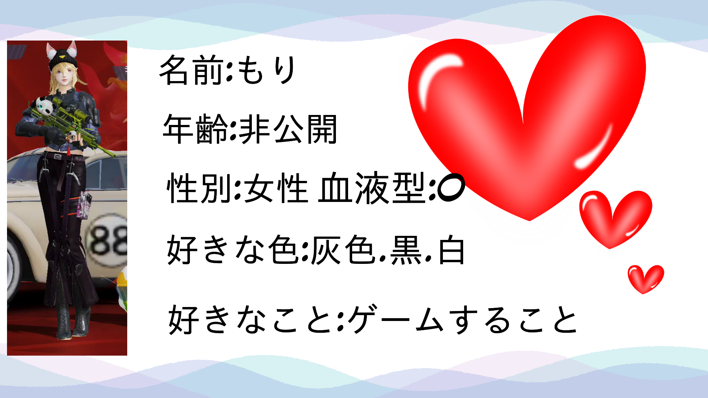

 妹(もり)！！ もりとは2024年に出会いました。 詳しい日付:2024/02/17 もりは私たち家族にゆるいですw 私がネット家族を作る前に、、もりが、後ろをずっとついてきていた、、 今はもりor妹または本名で呼んでいます。 主に午後10時ぐらいから一緒にやっています！ もりに下ネタを言っｔ、、((((殴 実は、、妹とたく兄は私のリスナーですwww そして可愛い！！仕草とか声とか可愛い！！ ネット家族のアイドル(?)です。 Close 訪問数